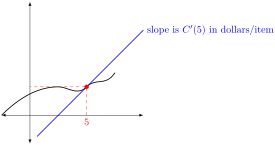

Before introducing the shortcut rules for finding slope functions, let’s review where we have been so far. If \(C(x) = \) total cost of \(x\) items, then \(C'\) is the derivative function.
More precisely, \(C(5)\) refers to the total cost of making items 1-5 in dollars, and \(C'(5)\) refers to how fast the total cost is changing when the number of items is 5 in dollars per item, which is equal to the slope of the cost function at \(x=5\text{.}\)
Graphically,

Algebraically,
\(C'(x) = \displaystyle\lim_{\Delta x\rightarrow 0} \dfrac{\Delta y}{\Delta x} = \dfrac{dy}{dx}\)
Our goal in this section will be to find or take the derivative of a given function. We will use the following notation
\begin{equation*}
f'(x) = \dfrac{d}{dx}\Big[ \ f(x) \ \Big]
\end{equation*}
as a shorthand for the sentence "Find the derivative of \(f(x)\) with respect to \(x\)"
Some students find the \(\ddx{\cdots}\) notation difficult to read because of the large number of symbols involved. In that case, you can use an alternate notation:
\begin{equation*}
f'(x) = \D{ f(x) }
\end{equation*}
In this notation, we use square brackets with an apostraphe on the right to say "take the derivative of the function inside the brackets. "
Section 10.1 Basic Derivative Rules
Example 10.1. Slope of a Constant Function.
Some functions always output the same number
\(c\text{,}\) regardless of the input
\(x\text{.}\) These functions have the form
\(f(x) = c\text{,}\) and their graphs are horizontal lines.
This function is horizontal everywhere, so has a slope of
\(0\) for all
\(x\text{.}\) In other words, we have
\begin{equation*}
f'(x) = \ddx{c} = 0
\end{equation*}
which is the same as saying
\begin{equation*}
\D{ c } = 0
\end{equation*}
Exploration 10.1.
Let \(f(x) = 3\text{.}\) Find \(f'(x)\text{.}\)
Solution.
\(f'(x) = \ddx{3} = 0\)
Equivalently, we could use our bracket notation to write \(\D{ 3 } = 0\)
Example 10.2. Slope of a Linear Function.
Some functions are lines. These functions have the form
\(f(x) = m x + b\) for some number
\(m,b\text{.}\) This function has the same slope everywhere, which is equal to the slope
\(m\) of the line. In other words, we have
\begin{equation*}
f'(x) = \ddx{ m x + b } = m
\end{equation*}
which is the same as saying
\begin{equation*}
\D{ m x + b} = m
\end{equation*}
Exploration 10.2.
Let \(f(x) = 3x + 2\text{.}\) Find \(f'(x) \text{.}\)
Solution.
\(f'(x) = \ddx{3x + 2} = 3\)
Equivalently, we could use our bracket notation to write \(\D{ 3x + 2} = 3\)
Slopes of Lines and Constant Functions.
Suppose that \(c,m,b\) are constant numbers. We have the following derivative shortcuts
\(\displaystyle \ddx{c} = 0\)
\(\displaystyle \ddx{m\cdot x + b} = m\)
\(\displaystyle \ddx{x} = 1\)
In bracket notation, this is
\(\displaystyle \D{c} = 0\)
\(\displaystyle \D{m\cdot x + b} = m\)
\(\displaystyle \D{x} = 1\)
More complex functions need derivative templates or shortcut rules. For example, the function \(f(x) = x^2\) has different slopes at different values of \(x\text{.}\) The same thing is true for other power functions like \(x^3\text{,}\) \(x^4\text{,}\) \(x^{1/2}\text{,}\) \(x^{-5}\text{,}\) and so on.
In
Exploration 9.6, we showed that when
\(f(x) = x^2\text{,}\) then
\(f'(x) = 2x\) using the limit definition of the derivative.
In theory, you could use the limit definition of the derivative to find \(f'\) for every power function \(f(x) = x^m\) for any constant power \(m\text{.}\) Fortunately, there is a pattern in these derivatives which gives a much easier formula to remember.
The Power Rule.
If the exponent \(m\) is a constant number,
\begin{equation*}
\dfrac{d}{dx}\Big[ {\color{blue} x}^{\color{red} m}= {\color{red} m} \cdot {\color{blue} x}^{{\color{red} m}-1} \Big]
\end{equation*}
In bracket notation, this is
\begin{equation*}
\D{x^m} = m \cdot x^{m-1}
\end{equation*}
Exploration 10.3.
Find the slope of Let \(f(x) = x^4\text{.}\) Find the slope of \(f\) at \(x=10\text{,}\) at \(x=-10\text{,}\) and at \(x=0\)
Solution.
First, we must find the slope function using the power rule
\begin{equation*}
f'(x) = \ddx{x^4} = 4 \cdot x^{4-1} = 4 x^3
\end{equation*}
In bracket notation, this is
\begin{equation*}
f'(x) = \D{x^4} = 4 x^{4-1} = 4x^3
\end{equation*}
Next, we can use the slope function to find the slope at each given \(x\) value.
- Slope at \(x=10\)
\(\displaystyle f'(10) = 4 \cdot 10^3 = 4000 \)
- Slope at \(x=-10\)
\(\displaystyle f'(-10) = 4 \cdot (-10)^3 = -4000 \)
- Slope at \(x=10\)
\(\displaystyle f'(0) = 4 \cdot (0)^3 = 0 \)
Exploration 10.4.
Let \(f(x) = \sqrt[4]{x^3} \text{.}\) Find \(f'(x)\)
Solution.
We always start by setting up the right notation
\begin{equation*}
f'(x) = \dfrac{d}{dx}\Big[ \sqrt[4]{x^3} \Big]
\end{equation*}
Now, we need to find a derivative rule to apply. So far, the rule we have are \(\ddx{c} = 0\text{,}\) \(\ddx{mx+b} = m\text{,}\) and \(\ddx{x^m} = m\cdot x^{m-1}\text{.}\) None of those rules have a root in them. Fortunately, we can use our knowledge of algebra to rewrite the original function (without taking the derivative) to see that \(\sqrt[4]{x^3} = x^{3/4}\text{.}\) That means we can rewrite the derivative as follows
\begin{align*}
f'(x) = \amp \dfrac{d}{dx}\Big[ \sqrt[4]{x^3} \Big] \\
= \amp \dfrac{d}{dx}\Big[ {\color{blue} x}^{\color{red} 3/4} \Big]
\end{align*}
Now we can use the power rule \(\dfrac{d}{dx}\Big[ {\color{blue} x}^{\color{red} m}= {\color{red} m}\cdot {\color{blue} x}^{{\color{red} m}-1} \Big] \)
\begin{align*}
= \amp {\color{red} 3/4} \cdot {\color{blue} x}^{{\color{red} 3/4}-1} \\
= \amp \frac{3}{4} \cdot x^{-1/4}
\end{align*}
This is an acceptable answer, but you can also rewrite if you like
\begin{align*}
= \amp \frac{3}{4} \cdot \dfrac{1}{\sqrt[4]{x}}
\end{align*}
Square roots are particularly common, so it may be helpful to remember a specific derivative rule for square roots.
Corollary 10.3.
Let \(f(x) = \sqrt{x}\text{.}\) Then \(f'(x) = \frac{1}{2} x^{-1/2}\)
Proof.
Recall from algebra that roots correspond to fractional powers. In particular\(\sqrt{x} = x^{1/2}\text{.}\) Using this,
\begin{align*}
f'(x) \amp = \ddx{x^{1/2}} \\
\amp = \frac{1}{2} x^{1/2 - 1}\\
\amp = \frac{1}{2} x^{-1/2}
\end{align*}
After enough practice, you should be able to use the derivative shortcut rules in this section off the top of your head.
But we will eventually learn much more complicated derivative rules, and need to apply them to more complicated functions. To help build the skills you will need to do this, it is important to learn how to use the shortcuts using \(\dfrac{d}{dx}\Big[\dots\Big]\) or \([ \dots ]'\) notation.
Recall from section
Section 2.1 that can break more compex functions into combinations of simpler funtions. Mathematically, we say that we build functions
recursively (layer by layer) from the inside out.
As a simple example, \(f(x) = 3x^2\) is build by taking \(x^2\text{,}\) and then tripling it. In other words, \(f(x) = triple(x^2) \text{.}\)
Our derivative rules will allow us to compute derivatives from the outside in (removing one layer at a time).
Derivatives and Constant Coefficients.
If \(c\) is a constant number,m and \(f(x)\) is any differentiable function,
\begin{equation*}
\dfrac{d}{dx}\Big[c\cdot f(x) \Big] = c\cdot \dfrac{d}{dx}\Big[f(x)\Big]
\end{equation*}
In bracket notation, this is
\begin{equation*}
\D{c \cdot f(x)} = c\cdot \D{f(x)}
\end{equation*}
Exploration 10.5.
Let \(f(x) = 3x^2\text{.}\) Find \(\dfrac{df}{dx}\)
Solution.
Recall that \(\dfrac{df}{dx}\) is just another way of saying \(f'(x)\text{.}\) So we can start by writing
\begin{equation*}
f'(x) = \dfrac{d}{dx}\Big[ 3x^2 \Big]
\end{equation*}
Now, we must use one of the four rules we have so far: \(\ddx{c} = 0\text{,}\) \(\ddx{mx+b} = m\text{,}\) \(\ddx{x^m} = m\cdot x^{m-1}\text{,}\) and \(\dfrac{d}{dx}\Big[c\cdot f(x)\Big] = c\cdot \dfrac{d}{dx}\Big[f(x)\Big]\text{.}\)
The only rule that can handle the coefficient of \(3\) is the last one: \(\dfrac{d}{dx}\Big[ {\color{red}c}\cdot {\color{blue}f(x)}
\Big]
=
{\color{red} c}\cdot \dfrac{d}{dx}\Big[\color{blue} f(x)\Big]\) That means we must interpret the problem as follows, first using the coefficient rule, and then using the power rule`
\begin{align*}
f'(x) = \amp \dfrac{d}{dx}\Big[{\color{red} 3}\cdot {\color{blue}x^2} \Big]\\
= \amp {\color{red} 3} \cdot \ddx{{\color{blue}x^2} } \\
= \amp 3 \cdot 2\cdot x^{2-1}\\
= \amp 6\cdot x^{1}\\
= \amp 6\cdot x
\end{align*}
In bracket notation, the computation is exactly the same
\begin{equation*}
\D{3x^2} = 3\D{x^2} = 3\cdot 2 x^1 = 6x
\end{equation*}
In words, the constant coefficient rule says that you can pull constant coefficients through the derivative.
Exploration 10.6.
Let \(f(x) = \dfrac{-2}{x}\text{.}\) Find \(f'(x)\text{.}\)
Solution.
The first step is always to set up the problem in \(\ddx{\dots}\) or \([ \dots ]'\text{.}\)
\begin{equation*}
f'(x) = \ddxfrac{ \dfrac{-2}{x} }
\end{equation*}
Next, we look at our list of derivative rules \(\ddx{c}=0\text{,}\) \(\ddx{mx+b}=m\text{,}\) \(\ddx{x^m}=mx^{m-1}\text{,}\) and \(\ddx{ cf(x)}=c\ddx{f(x)}\text{.}\)
Unfortunately, none of these apply as written. That means that you need to rewrite the original function before we can apply any rules. Here, we can use the basic property of algebra that \(\frac{1}{x} = x^{-1}\)
\begin{align*}
f'(x) = \amp \ddxfrac{ \dfrac{-2}{x} }\\
= \amp \ddx{ {\red -2} \cdot {\blue x^{-1} } }
\end{align*}
Now we can apply the derivative rule \(\ddx{ \red c} {\blue f(x) } = {\red c} \ddx{\blue f(x) }\)
\begin{align*}
= \amp \ddx{ {\red -2} \cdot { \blue x^{-1} } }\\
= \amp {\red -2} \cdot \ddx{ {\blue x^{-1} } }
\end{align*}
Now we can use the power rule \(\ddx{ {\blue x}^{\green m} } = {\green m}\cdot {\blue x}^{{\green m}-1} \)
\begin{align*}
= \amp { -2} \cdot \ddx{ {\blue x}^{\green -1} }\\
= \amp { -2} \cdot {\green -1} { {\blue x}^{{\green -1} -1 } }\\
= \amp { -2} \cdot { -1} { { x}^{-2 } }\\
= \amp 2 { { x}^{-2 } } = 2\dfrac{1}{x^2} = \dfrac{2}{x^2}
\end{align*}
The key idea of each of the computation above is that derivative rules attack functions from the outside in.
Derivatives of Sums and Differences.
Suppose that \(f(x)\) and \(g(x)\) are differentiable functions. Then
\begin{equation*}
\ddx{ f(x) + g(x) } = \ddx{f(x)} + \ddx{g(x)}
\end{equation*}
and
\begin{equation*}
\ddx{f(x) - g(x) } = \ddx{f(x) } - \ddx{g(x)}
\end{equation*}
In bracket notation, this is written \(\D{f(x) + g(x)} = \D{f(x)} + \D{g(x)} \) and \(\D{f(x) - g(x)} = \D{f(x)} - \D{g(x)} \)
Exploration 10.7.
Let \(f(x) = 15x^4 + 2x^{-1} + 13\text{.}\) Find \(f'(x)\text{,}\) and find the slope of \(f\) at \(x=2\)
Solution.
As always, we need to set up
\begin{equation*}
f'(x) = \ddx{ 15x^4 + 2x^{-1} + 13 }
\end{equation*}
and we look at our list of derivative rules \(\ddx{c}=0\text{,}\) \(\ddx{mx+b}=m\text{,}\) \(\ddx{x^m}=mx^{m-1}\text{,}\) \(\ddx{\frac cf(x)}=c\ddx{f(x)}\text{,}\) and \(\ddx{f(x) \pm g(x)} = \ddx{f(x)} \pm \ddx{g(x)}\text{.}\)
How do we decide which rule we can use? We use the order of operations to figure out the "outermost" or "weakest" operation. Following the acronym PEMDAS, subtraction and addition are the weakest operations, so we can think of the expression as
\begin{equation*}
f'(x) = \ddx{ \red{15x^4} + \red{2x^{-1}} + \red{13} }
\end{equation*}
Now we have the derivative of a sum, which is equal to the sum of the derivatives
\begin{equation*}
f'(x) = \ddx{ \red{15x^4} } + \ddx{ \red{2x^{-1} } } + \ddx{\red{13}}
\end{equation*}
Using the other, more familiar rules we can now compute
\begin{align*}
= \amp 15\ddx{x^4} + 2\ddx{x^{-1}} + \ddx{13}\\
= \amp 15\cdot 4x^3 + 2\cdot -1 x^{-2} + 0\\
= \amp 60x^3 - 2 x^{-2} = 60 x^3 - \dfrac{2}{x^2}
\end{align*}
To find the slope at \(x=2\text{,}\) just plug 2 into the formula for \(f'(x)\text{.}\)
\begin{equation*}
f'(2) = 60 \cdot 2^3 - 2\cdot \frac{1}{2^2} = 480 - 0.5 = 479.5
\end{equation*}
Basic Derivative Rules.
Suppose that \(f,g\) are differentiable functions of \(x\text{,}\) that \(m,c\) are constant numbers. Then
\(\displaystyle \ddx{c}=0\)
\(\ddx{m\cdot x+b}=m\) and \(\ddx{x} = 1\)
\(\displaystyle \ddx{x^m}=m\cdot x^{m-1}\)
\(\displaystyle \ddx{ \sqrt{x}}=\frac{1}{2}\cdot x^{-1/2}\)
\(\displaystyle \ddx{ c\cdot f(x)}=c\cdot \ddx{f(x)}\)
\(\displaystyle \ddx{f(x) \pm g(x)} = \ddx{f(x)} \pm \ddx{g(x)}\)
Danger! The derivative rules for \(\times\) and \(\div\) are much more complicated. We will address those rules in a later section.
In bracket notation, these rules are written
\(\displaystyle \D{c}=0\)
\(\D{m\cdot x+b} =m\) and \([x]' = 1 \)
\(\displaystyle \D{x^m} =m\cdot x^{m-1}\)
\(\displaystyle \D{\sqrt{x}}=\frac{1}{2}\cdot x^{-1/2}\)
\(\displaystyle \D{ c\cdot f(x)} =c\cdot \D{f(x)}\)
\(\displaystyle \D{f(x) \pm g(x)} = \D{f(x)} \pm \D{g(x)}\)
Exploration 10.8.
Suppose that the total profit in the scenario where you sell \(x\) items is equal to \(P(x) = -0.1x^2 + 30x - 10\text{.}\) Find how fast the profit is changing when \(x=100\) items, and when \(x=200\) items.
Solution.
We will study many applications of derivatives, beginning in the next section. For now, recall that if \(y=P(x)\) gives the total profit in $ in the scenario when you sell \(x\) items, then the slope of profit \(P'(x)\) is in $/item, and tells you approximately how much a single additional item will change the total proift.
The first step is to find the slope function by writing
\begin{align*}
P'(x) = \amp \ddx{ -0.1x^2 + 30x - 10 } \\
= \amp \ddx{ \red{-0.1x^2} + \red{30x} - \red{10} } \\
= \amp \ddx{\red{-0.1x^2}} + \ddx{\red{30x}} - \ddx{ \red{10} } \\
= \amp \ddx{ \red{-0.1}\blue{x^2} } + \ddx{ \red{30} \blue{x} } - \ddx{ 10} \\
= \amp \red{-0.1} \ddx{ \blue{x^2} } + \red{30}\ddx{ \blue{x} } - \ddx{ 10} \\
= \amp { -0.1} \ddx{ \blue{x}^{\red{2}} } + {30}\ddx{ \blue{x} } - \ddx{ 10} \\
= \amp { -0.1} \cdot{ \red{2} \blue{x}^{\red{2}-1}} + {30} \cdot{ 1 } - \ddx{ 10} \\
= \amp { -0.1} \cdot 2 \blue{x}^{1} + {30} \cdot{ 1 } - 0 \\
= \amp -0.2 x + 30
\end{align*}
In the scenario where you are selling \(x=100\) items, we have
\begin{equation*}
P'(100) = -0.2(100) + 30 = 10
\end{equation*}
in $/item. In other words, selling an additional item (going from 100 to 101 items) will increase total profit by approximately 10$ for that single item.
In the scenario where you are selling \(x=100\) items, we have
\begin{equation*}
P'(200) = -0.2(200) + 30 = -10
\end{equation*}
in $/item. In other words, selling an additional item (going from 200 to 201 items) will decrease total profit by approximately 10$ for that single item.
We will frequently have questions that combine several of the strategies and concepts that we have learned in this course. These are often called synthesis problems.
Finding the equation for tangent lines is a classic kind of synthesis problem.
Exploration 10.9.
Let \(f(x) = 3x^2 - 2x + 4\text{.}\) Find the equation for the line tangent to \(f(x)\) at \(x=1\text{.}\)
Solution.
We want to find the equation of a line. That means we will need to use point slope form
\begin{equation*}
y = \red{m} (x- \red{x_1}) + \red{y_1}
\end{equation*}
Furthermore, we want the line to pass through our function at the point \(x=1\text{,}\) and we want the line to have the same slope as our function at this point.
To make sure the line passes through our curve, we set
\begin{equation*}
x_1 = 1
\end{equation*}
and
\begin{equation*}
y_1 = f(1) = 3\cdot 1^2 - 2\cdot 1 + 4 = 5
\end{equation*}
To make sure the slope of this line matches the slope of the curve, we want to set
\begin{equation*}
m = f'(1)
\end{equation*}
That means to find \(m\text{,}\) we first need an equation for \(f'(x)\text{.}\)
\begin{align*}
f'(x) = \amp \ddx{ 3x^2 - 2x + 4} \\
= \amp \ddx{3x^2} - \ddx{2x} + \ddx{4} \\
= \amp 3\ddx{x^2} - 2\ddx{x} + \ddx{4} \\
= \amp 3\cdot 2x - 2\cdot 1 + 0 \\
= \amp 6x -2
\end{align*}
That means that
\begin{equation*}
m=f'(1) = 6\cdot 1 -2 =4
\end{equation*}
Putting this all together, the equation for the line tangent to \(f\) at \(x=1 \) is
\begin{equation*}
y = 4 (x-1) + 5
\end{equation*}
If you wanted, you could simplify this to get
\begin{equation*}
y = 4x + 1
\end{equation*}
Exploration 10.10.
Suppose that under current market conditions, your revenue is going up at 5$/unit and that your costs are going up at 12 $/unit. How fast is your cost changing?
Solution.
The key concept here is to remember that
\begin{equation*}
\text{Profit} = \text{Revenue} - \text{Cost}
\end{equation*}
Mathematically, this is
\begin{equation*}
P(x) = R(x) - C(x)
\end{equation*}
To understand how fast profit is changing, we must take the derivative of profit
\begin{equation*}
P'(x) = \ddx{ R(x) - C(x) }
\end{equation*}
Using our derivative rules,
\begin{align*}
P'(x) = \amp \ddx{R(x) } - \ddx{C(x)} \\
= \amp R'(x) - C'(x)
\end{align*}
In the text of the problem, we are told the values of \(R'\) and \(C'\) that "under current market conditions". In other words, we are told \(R'(x) = 5\) and \(C'(x)=12\) for whatever the "current" value of \(x\) is. That means we can plug this information into our formula for \(P'\)
\begin{equation*}
P'(x) = 5 - 12 = -7
\end{equation*}
Under current market conditions (for the current value of \(x\)), profit is decreasing by 7 $/item.
Exploration 10.11.
(a)
Suppose that \(f(x) = 17x - 3\text{.}\) Find \(f'(x)\)
Solution.
There are two ways to find this derivative. First, note that \(f(x) = \red{ 17} x - {\blue 3} = {\red m} x + {\blue b} \) where \(m=17\) and \(b=-3\text{.}\) Using the shortcut \([mx + b]' = m\text{,}\) we get
\begin{equation*}
[mx + b]' = 17
\end{equation*}
You can also find this derivative using the formula for derivatives of sums and differences, for constant coefficients \([m\cdot f(x)]' = m\cdot [f(x)]'\) and the formulas \([x]' = 1\) and \([m]' = 0\) for any number \(m\text{.}\)
\begin{align*}
[ \red{ 17x} - {\blue 3}] \amp = [17x]' - [3]' \amp \text{sum rule}\\
\amp = 17[x]' - [3]' \amp \text{coefficient rule}\\
\amp = 17\cdot 1 - 0\amp\text{basic rules}\\
\amp = 17
\end{align*}
(b)
Let \(f(x) = 6x^5\text{.}\) Find \(f'(x)\text{.}\)
Solution.
\begin{align*}
[6x^5]' \amp = 6\cdot [x^5]' \amp \text{coefficient rule}\\
\amp = 6\cdot 5x^4 \amp\text{power rule}\\
\amp = 30 x^4
\end{align*}
(c)
Let \(f(x) = 5 - 2 x^7 + 3x\text{.}\) Find \(f'(x)\)
Solution.
\begin{align*}
[5 - 2x^5 + 3x]' \amp = [5]' - [2x^7]' + [3x]' \amp \text{sum rule}\\
\amp = [5]' - 2\cdot [x^7]' + 3\cdot[x]' \amp \text{coefficient rule}\\
\amp = [5]' - 2\cdot 7 x^6 + 3\cdot[x]' \amp\text{power rule}\\
\amp = 0 - 14 x^6 + 3\cdot 1 \amp\text{basic rules}\\
\amp = -14x^6 + 3
\end{align*}
(d)
Let \(f(x) = \dfrac{3}{x} + \dfrac{5}{x^2}\text{.}\) Find \(f'(x)\)
Solution.
Recall that \(\frac{3}{x} = 3\frac{1}{x} = 3\cdot x^{-1}\) and that \(\frac{5}{x^2} = 5\cdot\frac{1}{x^2} = 5\cdot x^{-2}\text{.}\) That means we are being asked to find
\begin{align*}
[3x^{-1} + 5x^{-2}]' \amp = [3x^{-1}]' + [5x^{-2}]' \\
\amp = 3[x^{-1}]' + 5[x^{-2}]' \\
\amp = 3(-1) x^{-1-1} + 5(-2)x^{-2-1}\\
\amp = -3 x^{-2} - 10 x^{-3}\\
\amp = \dfrac{-3}{x^2} - \dfrac{10}{x^3}
\end{align*}
(e)
Let \(f(x) = 3\sqrt{x} - 2 \sqrt[4]{x}\text{.}\) Find \(f'(x)\)
Solution.
Recall that \(\sqrt{x} = x^{1/2}\) and that \(\sqrt[4]{x} = x^{1/4}\text{.}\) That means that we are asked to compute
\begin{align*}
[3 x^{1/2} - 2 x^{1/4}]' \amp = [3x^{0.5} - 2x^{0.25}]'\\
\amp = [3 x^{0.5}]' - [2 x^{0.25}]'\\
\amp = 3[x^{0.5}]' -2[x^{0.25}]' \\
\amp = 3\cdot 0.5x^{0.5-1} - 2\cdot 0.25x^{0.25-1}\\
\amp = \\
\amp = 1.5 x^{-1/2} - 0.5 x^{-3/4}\\
\amp = 1.5 \frac{1}{\sqrt{x}} - 0.5 \frac{1}{\sqrt[4]{x^3}}
\end{align*}
In most problems, you get to chose how to write your answer. For example, you don’t need to do all of the simplifications above. They are shown here to remind you of some algebra that you might need to do in other problems.
A perfectly acceptable answer to this question would be something like
\begin{equation*}
f'(x) = 1.5 x^{-0.5} - 0.5 x^{-0.75}
\end{equation*}
(f)
Let \(f(x) = \dfrac{5}{\sqrt[3]{x}}\text{.}\) Find the equation for the line tangent to \(f(x)\) at \(x=1\text{.}\)
Solution.
Recall that the equation of the line tangent to \(f(x)\) at \(x=1\) will have the form
\begin{equation*}
y = \red{ m} (x - \blue{ {x_1}}) + \green{{ y_1}}
\end{equation*}
where \(\blue{x_1} = \blue 1\text{,}\) \(\green{y_1} = \green{ f(1)}\text{,}\) and \(\red m = \red{ f'(1)}\text{.}\) We can immediately compute
\begin{equation*}
\green{ y_1} = \green{f(1)} = \green{\dfrac{5}{\sqrt[3]{1}}} = \green{5}
\end{equation*}
To find \(\red m\text{,}\) we first need an equation for \(f'(x)\text{.}\)
\begin{align*}
f'(x) \amp = \left[ \dfrac{5}{\sqrt[3]{x}} \right]'\\
\amp = [ 5x^{-1/3}]'\\
\amp = [5 x^{-0.333\dots}]'\\
\amp = 5 [ x^{-0.333\dots}]'\\
\amp = 5 \cdot (-0.333) x^{-0.333-1}\\
\amp = 5 \cdot (-0.333) x^{-1.333}
\end{align*}
Using this, we can find that
\begin{equation*}
\red m = f'(1) = 5\cdot (-0.333)\cdot 1^{-1.333} = -1.666\dots
\end{equation*}
Putting it all together, we get that the equation for the tangent line to \(y = f(x)\) at \(x=1\) is
\begin{equation*}
y = \red{-1.666} (x-\blue{1}) + \green{5}
\end{equation*}
Tips for Taking Derivatives.
Always start by writing down
\begin{equation*}
f'(x) = \ddx{\dots}\text{,}
\end{equation*}
filling in the original function you are given.
Write down the derivative rules every time you use them. To identify which rules you are allowed, think about Order of Operations (PEMDAS). You will be able to use the rule that goes along with the weakest operation that you see in your expression.
-
If you cannot use any derivative rule with the function as written, use algebra to rewrite the original function.
For example, rewriting \(\dfrac{5}{x^2} = 5\dfrac{1}{x^2} = 5x^{-2}\) can help you find the derivative of
\begin{equation*}
\ddxfrac{\dfrac{5}{x^2}} = \ddx{5x^{-2}}
\end{equation*}
Rewriting \(4\cdot \sqrt[3]{x^2} = 4\cdot (x^{2/3}) \) can help you find the derivative of
\begin{equation*}
\ddx{4\cdot \sqrt[3]{x^2}} = \ddx{4\cdot (x^{2/3})}
\end{equation*}
Rewriting \(\dfrac{1}{\sqrt{x}} = \dfrac{1}{x^{1/2}}= x^{-1/2}\) can help you find the derivative of
\begin{equation*}
\ddxfrac{\dfrac{1}{\sqrt{x}} } = \ddx{x^{-1/2} }
\end{equation*}
Section 10.2 Derivatives of Exponentials and Logarithms
In
a previous section, we have already noted that the number
e\approx 2.714\dots will play an important role in calculus.
More precisely, we said that \(f(x) = e^x = exp(x) = (2.714\dots)^x \) is the natural exponential for calculus, so we will call it the natural exponential function.
Just like polynomials, the slope of the nautral exponenital function is different at different values of \(x\) Is there a nice formula that gives us the slope as a function of \(x\text{?}\) Surprisingly, the answer is yes.
The Derivative of \(e^x\).
\begin{equation*}
\ddx{e^x} = e^x
\end{equation*}
In bracket notation, this is
\begin{equation*}
[e^x ]' = e^x
\end{equation*}
In other words, the slope of any point on the curve is equal to the height of that point on the curve.
Exploration 10.12.
Let \(f(x) = 6e^x - 2\text{.}\) Find \(f'(x)\text{.}\)
Solution.
\begin{align*}
f'(x) = \amp \ddx{ 6e^x - 2 }\\
= \amp \ddx{6e^x} - \ddx{2} \\
= \amp 6\ddx{e^x} - 0\\
= \amp 6 e^x
\end{align*}
Note that the only new thing in this compoutation was the last step, where we used our new formula that we can replace \(\ddx{e^x}\) with \(e^x\)
Recall also that \(\ln(x)\text{,}\) called the natural logarithm is the inverse of \(e^x\text{.}\) This function also has different slopes at different values of \(x\) Is there a nice formula that gives us the slope as a function of \(x\text{?}\) Surprisingly, the answer is also yes.
The Derivative of \(\ln(x)\).
\begin{equation*}
\ddx{\ln(x) } = \dfrac{1}{x}
\end{equation*}
In bracket notation, this is
\begin{equation*}
[ \ln(x) ]' = \dfrac{1}{x}
\end{equation*}
Exploration 10.13.
Let \(f(x) = 3\ln(x) - x^{1/3}\text{.}\) Find \(f'(x)\text{.}\)
Solution.
\begin{align*}
f'(x) = \amp \ddx{ 3\ln(x) - x^{1/3} } \\
= \amp \ddx{3\ln(x)} - \ddx{x^{1/3}}\\
= \amp 3\ddx{\ln(x)} - \frac{1}{3} \cdot x^{\frac{1}{3}-1} \\
= \amp 3\cdot \dfrac{1}{x} - \frac{1}{3} \cdot x^{-2/3}
\end{align*}
Derivatives of Exponentials and Logarithms.
Exploration 10.14.
(a)
Let \(f(x) = 12e^x - 2\text{.}\) Find \(f'(x)\text{.}\)
Solution.
\begin{align*}
[12e^x - 2]' \amp = [12e^x]' - [2]'\\
\amp = 12 [e^x]' - 0\\
\amp 12 e^x
\end{align*}
(b)
Let \(f(x) = 7\ln(x) + 5\text{.}\) Find \(f'(x)\)
Solution.
\begin{align*}
[7\ln(x) +5]'\amp = [7\ln(x)]' + [5]' \\
\amp = 7[\ln(x)]' + 0 \\
\amp = 7\cdot \frac{1}{x} \\
\amp = \frac{7}{x}
\end{align*}
(c)
Let \(f(x) = 3x^8 + 2e^x - 4\ln(x)\text{.}\) Find \(f'(x)\text{.}\)
Solution.
\begin{align*}
[3x^8 + 2e^x - 4\ln(x)] \amp = [3x^8]' + [2e^x]' - [4\ln(x)]' \\
\amp = 3[x^8]' + 2[e^x]' - 4[\ln(x)]'\\
\amp = 3\cdot 8x^7 + 2e^x - 4\cdot \frac{1}{x}\\
\amp = 24 x^7 + 2e^x - \frac{4}{x}
\end{align*}
(d)
Let \(f(x) = e^x + x^e \text{.}\) Find \(f'(x)\text{.}\)
Solution.
This problem requires very careful reading. The key is to remember that our only variable is \(\red x\). The other characters \(e\) and \(2\) both refer to constant numbers. This is where \(\frac{d}{dx}\) notation shines, since it reminds us that the vairable is \(\red x\text{.}\)
\begin{align*}
f'(x) \amp = \ddx{ e^{\red x} + {\red x}^e} \\
\amp = \ddx{e^{\red x}} + \ddx{{\red x}^e}
\end{align*}
Look very carefully about where the variable is in each term. In the first term, \(x\) is in the exponent, so use the exponential rule
\begin{equation*}
\ddx{e^{\red x}} = e^{\red x}
\end{equation*}
In the second term, \(x\) is in the base, so use the power rule with \(\blue m = \blue e = \blue 2.718\dots\)
\begin{equation*}
\ddx{{\red x}^{\blue m} = \blue m {\red x}^{\blue m - 1}}
\end{equation*}
Putting this all together gives the following
\begin{align*}
f'(x) \amp = \ddx{ e^{\red x} + {\red x}^e} \\
\amp = \ddx{e^{\red x}} + \ddx{{\red x}^e} \\
\amp = e^{\red x} + {\blue e}{\red x}^{\blue e-1}
\end{align*}
(e)
Let \(f(x) = e^2 + 2^e\text{.}\) Find \(f'(x)\text{.}\)
Solution.
This problem requires very careful reading. The key is to remember that our only variable is \(\red x\). The other characters \(e\) and \(2\) both refer to constant numbers. This is where \(\frac{d}{dx}\) notation shines, since it reminds us that the vairable is \(\red x\text{.}\)
\begin{align*}
f'(x) \amp = \ddx{ e^2 + 2^e}
\end{align*}
Note that there are no \(\red x\)’s in either term. That means we can type them into our calculator and replace them with numbers: \(e^2 = 7.389\dots\) and \(2^e = 6.580\dots\text{.}\) Putting this in and using our derivative rules gives the following
\begin{align*}
f'(x) \amp = \ddx{ 7.389 + 6.580} \\
\amp = \ddx{7.389} + \ddx{6.580} \\
\amp = 0 + 0
\end{align*}